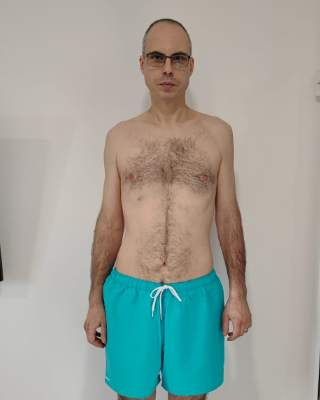
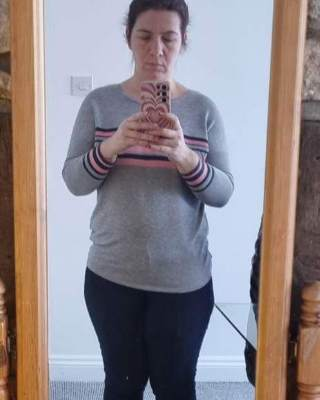
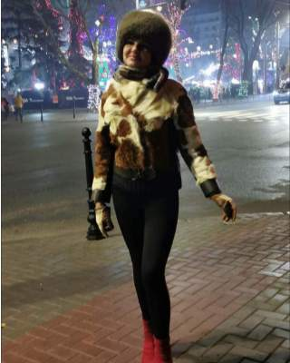
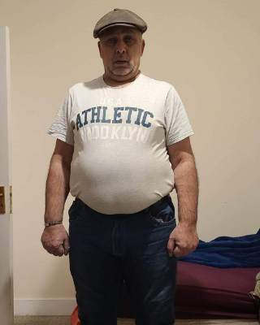
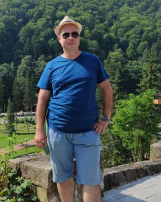
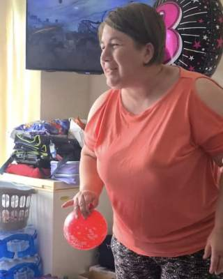
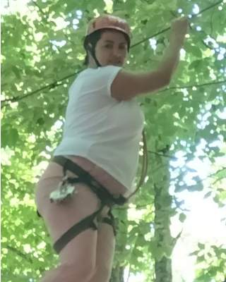

Gastric Sleeve cu Prof. Dr. Halil Alış și Op. Dr. Akın Ünal, într-un pachet all-inclusive care reunește intervenția, analizele, hotelul, transferurile și translatorul român. Solicită evaluarea gratuită și află dacă ești eligibil.
Ofertă pentru programări confirmate până la 31.12.2026. Eligibilitatea și prețul final se confirmă după evaluarea medicală.





Din momentul în care aterizezi în Istanbul și până pleci acasă, fiecare detaliu este organizat de echipa Medicross.
Gastric sleeve, realizat de Prof. Dr. Halil Alış și Op. Dr. Akın Ünal.
Spitalizarea și toate analizele pre-operatorii.
Cazare la hotel pe durata șederii în Istanbul.
Transferuri private aeroport – spital – hotel.
Lângă tine la fiecare pas, în spital și la consultații.
Gratuite, timp de un an după operație.
Trage de linie pentru a compara. Experiențele pacienților sunt individuale, iar rezultatele diferă de la o persoană la alta.

„Am renăscut la 40 de ani! Am stat 20 de ani la 130 kg în loc să fiu ca acum, la 79 kg. Operația nu a fost doar benefică, ci cel mai bun lucru din viața mea.”

„Am luat cea mai bună decizie! Aș recomanda operația unui prieten — rezultate extraordinare, servicii foarte bune.”

„Înainte de operație aveam 98 kg. În 8 luni am ajuns la 60 kg. Pe lângă îmbunătățirile fizice, mi-a adus și mai multă încredere în mine.”
Intervenție laparoscopică, minim invazivă: chirurgul îndepărtează o mare parte din stomac și îi lasă forma unui „tub” (mânecă). Stomacul mai mic înseamnă porții mai mici și senzație de sațietate mai repede.
Gastric sleeve este, în general, intervenția mai simplă. Bypass-ul gastric poate fi recomandat în cazuri mai complexe, de exemplu când există diabet sau alte afecțiuni asociate. Alegerea o faci împreună cu chirurgul, după evaluarea analizelor.
Stai în Istanbul 3–4 zile, sub supravegherea echipei medicale, apoi revii treptat la activități în 2–3 săptămâni, urmând planul alimentar primit. În medie, pacienții pierd 60–70% din excesul ponderal în primul an — rezultatul diferă de la persoană la persoană.
Chirurgi specializați în chirurgie bariatrică. Planul intervenției și recomandările se stabilesc după evaluarea medicală.
Vorbește direct cu echipa →Completezi formularul sau ne scrii pe WhatsApp: greutatea, înălțimea și eventualele afecțiuni. Durează câteva minute și nu te obligă la nimic.
În maximum 24 de ore, un consultant Medicross revine cu planul de tratament și cu confirmarea ofertei de 2.000 €, după evaluarea medicală.
Alegi data care ți se potrivește. Dacă hotărăști să mergi mai departe, noi organizăm tot restul: de acasă până acasă.
Completează formularul și consultantul nostru pentru pacienți te contactează în cel mai scurt timp. Dacă vrei, adaugă greutatea și înălțimea.
Un consultant Medicross te contactează în maximum 24 de ore. Dacă ai întrebări sau analize recente, ni le poți trimite acum pe WhatsApp.
Scrie-ne pe WhatsAppPachetul all-inclusive include intervenția cu Prof. Dr. Halil Alış și Op. Dr. Akın Ünal, spitalizarea, toate analizele pre-operatorii, hotelul, transferurile private și translatorul român care te însoțește la fiecare pas.
Dacă ai un IMC peste 35, sau peste 30 și te confrunți cu afecțiuni asociate greutății (diabet, hipertensiune, apnee în somn), ești un candidat potrivit pentru această intervenție. Decizia finală îți aparține ție și chirurgului, după ce analizele tale sunt evaluate — fără presiune, fără obligații.
Rămâi în Istanbul aproximativ 3–4 zile, cât timp echipa medicală te monitorizează îndeaproape. După ce ajungi acasă, revii la activitățile obișnuite în 2–3 săptămâni, respectând planul alimentar și indicațiile medicale individuale.
În medie, pacienții care aleg Gastric Sleeve pierd 60–70% din excesul ponderal în primul an. Rezultatul depinde de cât de riguros respecți indicațiile medicale și de stilul de viață pe care îl adopți după intervenție.
Consultații online gratuite timp de un an după operație, oferite de medicul operator sau de medic împreună cu dieteticianul, în funcție de planul de urmărire postoperatorie.
Oferta de 2.000 € este valabilă doar pentru programările confirmate până la 31 decembrie. Numărul de locuri din calendarul chirurgilor este limitat — cu cât ne scrii mai devreme, cu atât ai mai multe opțiuni de dată.Oferta a expirat. Scrie-ne pe WhatsApp și îți comunicăm prețul și datele disponibile în prezent.
De regulă se recomandă să aștepți aproximativ un an după operație, ca greutatea și aportul de nutrienți să fie stabile. Medicul îți dă recomandări personalizate la evaluare.
La un spital partener acreditat JCI din Istanbul. Hotelul, transferurile private și translatorul român sunt incluse în pachet, iar noi organizăm tot ce ține de călătoria ta.
Numărul de locuri din calendarul chirurgilor este limitat — cu cât ne scrii mai devreme, cu atât ai mai multe opțiuni de dată.Scrie-ne și îți spunem prețul și datele disponibile acum.
Medicross nu prestează servicii medicale — rolul nostru este de intermediere și organizare a călătoriei medicale. Responsabilitatea medicală aparține unității medicale din Turcia. Prețul afișat este valabil pentru programări confirmate până la 31.12.2026 și poate necesita confirmare finală după evaluarea analizelor medicale.
Imagini ilustrative generate cu AI, acolo unde sunt marcate ca atare; nu reprezintă pacienți, personal medical, cazare sau rezultate reale ale tratamentelor.